CCC and Gemara
CCC · FINOS
Reusable, technology-agnostic threats, controls and assessment requirements. Written once, mapped across clouds.

Gemara · OpenSSF
Schemas for expressing governance, risks, controls, policies and evidence as structured, machine-readable data.
Gemara links requirements to threats, controls, policies and assessments. That is what makes governance version-controlled, testable and reusable.